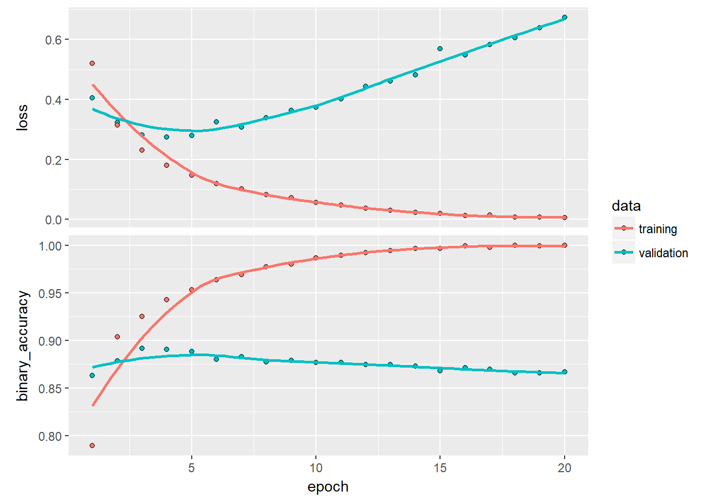
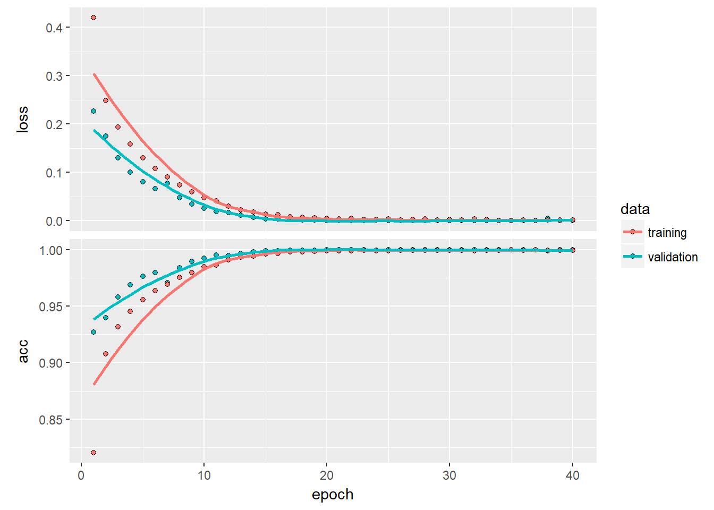

IMDB movie classification
Overview
This post follows through the example in the book “Deep learning with R” by Francios Chollet with J. J. Alaire.
Can a machine predict a good or bad movie rating?
Load the IMDB data
imdb <- dataset_imdb(num_words = 10000)
c(c(train_data, train_labels), c(test_data, test_labels)) %<-% imdbView data
train_data[[1]]## [1] 1 14 22 16 43 530 973 1622 1385 65 458 4468 66 3941
## [15] 4 173 36 256 5 25 100 43 838 112 50 670 2 9
## [29] 35 480 284 5 150 4 172 112 167 2 336 385 39 4
## [43] 172 4536 1111 17 546 38 13 447 4 192 50 16 6 147
## [57] 2025 19 14 22 4 1920 4613 469 4 22 71 87 12 16
## [71] 43 530 38 76 15 13 1247 4 22 17 515 17 12 16
## [85] 626 18 2 5 62 386 12 8 316 8 106 5 4 2223
## [99] 5244 16 480 66 3785 33 4 130 12 16 38 619 5 25
## [113] 124 51 36 135 48 25 1415 33 6 22 12 215 28 77
## [127] 52 5 14 407 16 82 2 8 4 107 117 5952 15 256
## [141] 4 2 7 3766 5 723 36 71 43 530 476 26 400 317
## [155] 46 7 4 2 1029 13 104 88 4 381 15 297 98 32
## [169] 2071 56 26 141 6 194 7486 18 4 226 22 21 134 476
## [183] 26 480 5 144 30 5535 18 51 36 28 224 92 25 104
## [197] 4 226 65 16 38 1334 88 12 16 283 5 16 4472 113
## [211] 103 32 15 16 5345 19 178 32Here we can see the feature engineered dataset ready for the model. Each word from the original review corpus has been encoded and given a number. So each number represents a word.
There are different approaches we could’ve taken, for example building a word dictionary and counting the number of occurences of each word in the dictionary within each review. Here we simply encode all the words in the reviews to numbers.
Using word counts and shallow learning tecniques like non-negative matrix factorization can work but you end up dealing with very sparse data and increasingly large matrices. By encoding the words as numbers we can use deep neural networks to embed the information into more succinct dimensional space to train on without having to deal with the size and sparsity.
train_labels %>% head## [1] 1 0 0 1 0 0And as our labels we have the binary good/bad outcome…
Link the original data
We can link back the original words using the following data:
word_index <- dataset_imdb_word_index()
reverse_word_index <- names(word_index)
names(reverse_word_index) <- word_index
decoded_review <- sapply(train_data[[1]], function(index) {
word <- if (index >= 3) reverse_word_index[[as.character(index - 3)]]
if (!is.null(word)) word else "?"
})Or we can make a function that will decode the input for us:
decode_words <- function(word_counts){
sapply(word_counts, function(index) {
word <- if (index >= 3) reverse_word_index[[as.character(index - 3)]]
if (!is.null(word)) word else "?"
})
}Let’s try:
train_data[[1]] %>%
decode_words %>%
head## [1] "?" "this" "film" "was" "just" "brilliant"Prepare data as tensors
For this text data we could simply have a 2D tensor where the first axis is our batches/movies and the second axis is each one of the possible words. In this case we restricted it to the top 10000 words in the corpus so we will have 10000 columns in this 2D tensor.
Currently however all our reviews have different lengths because they do not all have every possible word in them:
train_data %>%
map_int(length) %>%
head## [1] 218 189 141 550 147 43In order for us to create a 2D tensor we can either pad each of these elements or one-hot encode them to 1/0 so that we have [samples, 10000]
One-hot encode
We can use the built in keras function:
train_data %<>%
map(~.x %>% keras::k_one_hot(num_classes = 10000))Or if we did it manually:
vectorize_sequences <- function(sequences, dimension = 10000) {
results <- matrix(0, nrow = length(sequences), ncol = dimension)
for (i in 1:length(sequences))
results[i, sequences[[i]]] <- 1
results
}
x_train <- vectorize_sequences(train_data)
x_test <- vectorize_sequences(test_data)
x_train[1:10,1:10]## [,1] [,2] [,3] [,4] [,5] [,6] [,7] [,8] [,9] [,10]
## [1,] 1 1 0 1 1 1 1 1 1 0
## [2,] 1 1 0 1 1 1 1 1 1 0
## [3,] 1 1 0 1 0 1 1 1 1 0
## [4,] 1 1 0 1 1 1 1 1 1 1
## [5,] 1 1 0 1 1 1 1 1 0 1
## [6,] 1 1 0 1 0 0 0 1 0 1
## [7,] 1 1 0 1 1 1 1 1 1 0
## [8,] 1 1 0 1 0 1 1 1 1 1
## [9,] 1 1 0 1 1 1 1 1 1 0
## [10,] 1 1 0 1 1 1 1 1 1 1Set outcome data types
Currently the outcomes are integers but we want them as numeric R types:
y_train <- as.numeric(train_labels)
y_test <- as.numeric(test_labels)Build network
model <- keras_model_sequential() %>%
layer_dense(units = 16, activation = "relu", input_shape = c(10000)) %>%
layer_dense(units = 16, activation = "relu") %>%
layer_dense(units = 1, activation = "sigmoid")
model %>% compile(
optimizer = optimizer_rmsprop(lr = 0.001),
loss = loss_binary_crossentropy,
metrics = metric_binary_accuracy
)Split test/train
val_indices <- 1:10000
x_val <- x_train[val_indices,]
partial_x_train <- x_train[-val_indices,]
y_val <- y_train[val_indices]
partial_y_train <- y_train[-val_indices]Train
history <- model %>% fit(
partial_x_train,
partial_y_train,
epochs = 20,
batch_size = 512,
# batch_size = 512,
validation_data = list(x_val, y_val)
)
history %>% plot
This shows a very interesting inverse trend between the training and the validation accuracy. This is better known as over-fitting.
If we train for only 4 epochs
model <- keras_model_sequential() %>%
layer_dense(units = 16, activation = "relu", input_shape = c(10000)) %>%
layer_dense(units = 16, activation = "relu") %>%
layer_dense(units = 1, activation = "sigmoid")
model %>% compile(
optimizer = "rmsprop",
loss = "binary_crossentropy",
metrics = c("accuracy")
)
model %>% fit(x_train, y_train, epochs = 4, batch_size = 512)
results <- model %>% evaluate(x_test, y_test)
results %>% head## $loss
## [1] 0.2899548
##
## $acc
## [1] 0.8854If we use dropout
model <- keras_model_sequential() %>%
layer_dense(units = 16, activation = "relu", input_shape = c(10000)) %>%
layer_dense(units = 16, activation = "relu") %>%
layer_dropout(rate = 0.3) %>%
layer_dense(units = 1, activation = "sigmoid")
model %>% compile(
optimizer = "rmsprop",
loss = "binary_crossentropy",
metrics = c("accuracy")
)
history <- model %>% fit(x_train, y_train, epochs = 40, batch_size = 256,validation_data = list(x_val, y_val))
history %>% plot
results <- model %>% evaluate(x_test, y_test)
results %>% head## $loss
## [1] 1.589528
##
## $acc
## [1] 0.84872We can see that using things like dropout can correct the overfitting problem.
Investigate the best predicted movie
So according to the model we can see the ratings by predicting the outcome:
options(scipen = 999)
predictions <-
model %>% predict(x_test)
predictions %>% head## [,1]
## [1,] 0.9998654127120971679687500
## [2,] 0.0000000000000000002472396
## [3,] 1.0000000000000000000000000
## [4,] 0.0000003745669516774796648
## [5,] 0.0188427586108446121215820
## [6,] 0.0000000379938214223329851We see movie 3 in the test set recieved a perfect review from our super objective model here…
Let’s see what the model learned from other people to arrive at this rating:
test_data[[3]] %>% decode_words## [1] "?" "kate" "played" "by"
## [5] "one" "of" "the" "most"
## [9] "nominated" "actresses" "of" "the"
## [13] "last" "decade" "of" "this"
## [17] "century" "and" "also" "one"
## [21] "of" "the" "most" "talented"
## [25] "actresses" "meryl" "streep" "out"
## [29] "of" "africa" "she" "is"
## [33] "wonderful" "is" "every" "part"
## [37] "that" "she" "plays" "the"
## [41] "?" "graduate" "is" "the"
## [45] "pride" "and" "joy" "of"
## [49] "the" "american" "cinema" "br"
## [53] "br" "?" "health" "is"
## [57] "?" "and" "her" "husband"
## [61] "george" "role" "well" "developed"
## [65] "by" "brilliant" "actor" "and"
## [69] "also" "oscar" "winner" "william"
## [73] "hurt" "smoke" "kiss" "of"
## [77] "the" "spider" "woman" "has"
## [81] "a" "hard" "time" "with"
## [85] "the" "?" "health" "of"
## [89] "his" "one" "true" "thing"
## [93] "and" "seeks" "his" "daughter's"
## [97] "help" "the" "poor" "daughter"
## [101] "ellen" "?" "?" "jerry"
## [105] "maguire" "has" "way" "too"
## [109] "much" "expected" "of" "her"
## [113] "no" "breaks" "the" "story"
## [117] "takes" "a" "very" "realistic"
## [121] "view" "on" "the" "illness"
## [125] "of" "a" "parent" "in"
## [129] "this" "movie" "the" "only"
## [133] "daughter" "has" "to" "put"
## [137] "her" "life" "on" "hold"
## [141] "to" "care" "for" "the"
## [145] "needs" "of" "others" "there"
## [149] "is" "always" "one" "in"
## [153] "every" "family" "who" "faces"
## [157] "that" "kind" "of" "responsibility"
## [161] "ellen" "is" "angry" "the"
## [165] "beginning" "of" "the" "movie"
## [169] "but" "as" "time" "passes"
## [173] "she" "ends" "up" "understanding"
## [177] "her" "?" "life" "time"
## [181] "dedication" "to" "her" "family"
## [185] "she" "even" "asks" "her"
## [189] "mom" "how" "do" "you"
## [193] "do" "his" "every" "day"
## [197] "in" "and" "out" "and"
## [201] "nobody" "notices" "it" "that"
## [205] "is" "what" "women" "do"
## [209] "a" "lot" "of" "what"
## [213] "i" "call" "invisible" "work"
## [217] "moreover" "we" "clean" "we"
## [221] "fix" "we" "?" "we"
## [225] "stretch" "we" "celebrate" "we"
## [229] "are" "the" "best" "friends"
## [233] "we" "are" "the" "mistress"
## [237] "sensitive" "some" "of" "us"
## [241] "like" "both" "women" "in"
## [245] "this" "movie" "have" "the"
## [249] "perfect" "education" "are" "the"
## [253] "psychological" "?" "for" "the"
## [257] "entire" "family" "and" "also"
## [261] "do" "all" "that" "invisible"
## [265] "work" "that" "is" "kate"
## [269] "ellen" "and" "many" "women"
## [273] "in" "our" "society" "many"
## [277] "of" "us" "have" "already"
## [281] "gone" "through" "that" "stage"
## [285] "of" "life" "when" "our"
## [289] "parents" "age" "and" "died"
## [293] "i" "have" "been" "there"
## [297] "they" "just" "went" "too"
## [301] "young" "i" "have" "given"
## [305] "my" "parents" "my" "thanks"
## [309] "but" "i" "never" "understood"
## [313] "them" "as" "well" "as"
## [317] "when" "i" "had" "to"
## [321] "play" "their" "roles" "and"
## [325] "had" "to" "walk" "in"
## [329] "their" "shoes" "this" "movie"
## [333] "mirrors" "the" "reality" "of"
## [337] "life" "perhaps" "it" "is"
## [341] "sad" "but" "that" "is"
## [345] "how" "life" "is" "at"
## [349] "times" "george" "a" "professor"
## [353] "at" "?" "is" "complicated"
## [357] "person" "who" "appears" "to"
## [361] "think" "that" "his" "work"
## [365] "is" "more" "important" "than"
## [369] "everybody" "else" "and" "has"
## [373] "a" "very" "master" "servant"
## [377] "mentality" "toward" "the" "women"
## [381] "in" "his" "life" "he"
## [385] "is" "not" "strong" "enough"
## [389] "to" "cope" "if" "you"
## [393] "want" "to" "see" "good"
## [397] "acting" "and" "the" "reality"
## [401] "of" "life" "do" "not"
## [405] "miss" "this" "movie" "favorite"
## [409] "scenes" "the" "restaurant" "coming"
## [413] "to" "kate" "?" "and"
## [417] "all" "the" "making" "of"
## [421] "a" "table" "out" "of"
## [425] "broken" "china" "that" "i"
## [429] "so" "symbolic" "we" "are"
## [433] "all" "broken" "?" "favorite"
## [437] "quotes" "george" "it" "is"
## [441] "only" "by" "going" "?"
## [445] "that" "you" "realize" "that"
## [449] "you" "are" "really" "going"
## [453] "downhill" "george" "you" "have"
## [457] "a" "?" "education" "but"
## [461] "where" "is" "your" "heart"
## [465] "br" "br"Well, that’s one loooooong review…